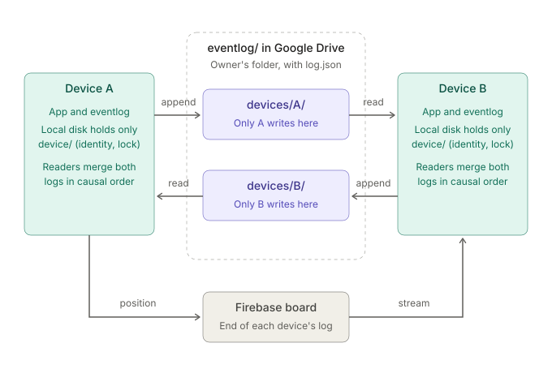

Two-device file flow
How eventlog's folders change as one device places an order and another ships it, on web storage with Google Drive (design D-060 to D-072). Device A is signed in as an Editor's account; device B is signed in as the log owner's account.

Step by step
Device A, local disk
Device B, local disk
Owner's Google Drive
Firebase board
written in this stepread by the other deviceUse the arrow keys to step.